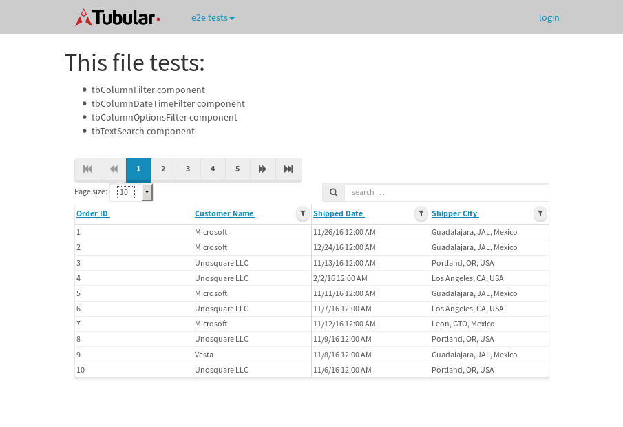
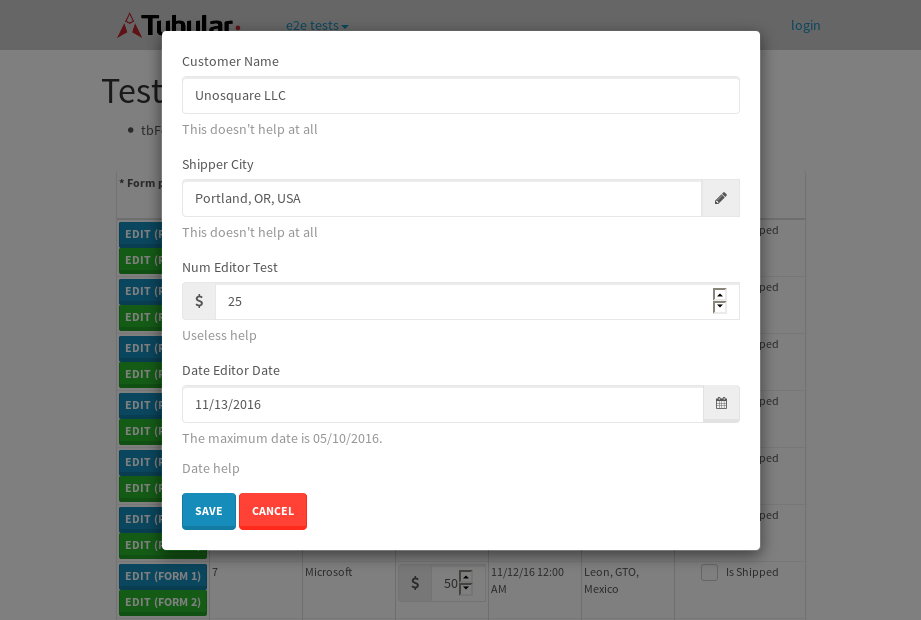
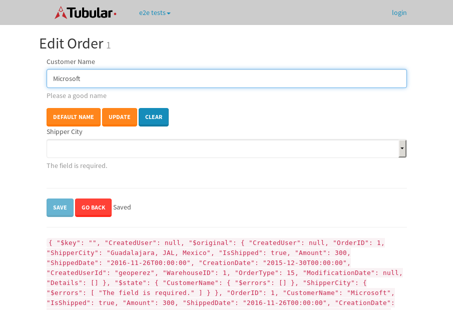

tbColumn.Grid Sorting - 31.73sTests: 5Skipped: 0Failures: 0 should sort data in ascending order then on descending order when sorting by Order Id column - 7.24sTests passed: 100.00%should order data in ascending order when click-sorting an unsorted text column - 5.645sTests passed: 100.00%should order data in descending order when click-sorting an ascending-sorted text column - 6.795sTests passed: 100.00%should order data in ascending order when click-sorting an unsorted date column - 5.559sTests passed: 100.00%should order data in descending order when click-sorting twice an unsorted date column - 6.489sTests passed: 100.00%
tbColumn.Grid Components - 4.426sTests: 3Skipped: 0Failures: 0 should print grid - 1.712s***Skipped***Tests passed: 0%should export grid - 1.455s***Skipped***Tests passed: 0%should show column selector - 1.259sTests passed: 100.00%
tbSingleForm.Form validations - 2.1sTests: 2Skipped: 0Failures: 0 should have an empty required field - 1.175sTests passed: 100.00%should not be able to click on save - 0.925sTests passed: 100.00%
Tubular Filters.tbColumnFilter - 113.067sTests: 12Skipped: 0Failures: 0 should cancel filtering when clicking outside filter-popover - 10.048sTests passed: 100.00%should disable Value text-input for "None" filter - 6.489sTests passed: 100.00%should disable apply button for "None" filter - 6.858sTests passed: 100.00%should decorate popover button when showing data is being filtered for its column - 12.097sTests passed: 100.00%should correctly filter data for the "Equals" filtering option - 8.732sTests passed: 100.00%should correctly filter data for the "Not Equals" filtering option - 9.54sTests passed: 100.00%should correctly filter data for the "Contains" filtering option - 9.665sTests passed: 100.00%should correctly filter data for the "Not Contains" filtering option - 9.117sTests passed: 100.00%should correctly filter data for the "Starts With" filtering option - 7.363sTests passed: 100.00%should correctly filter data for the "Not Starts With" filtering option - 7.194sTests passed: 100.00%should correctly filter data for the "Ends With" filtering option - 7.266sTests passed: 100.00%should correctly filter data for the "Not Ends With" filtering option - 7.242sTests passed: 100.00%
Tubular Filters.tbColumnDateTimeFilter - 140.159sTests: 12Skipped: 0Failures: 0 should cancel filtering when clicking outside filter-popover - 7.886sTests passed: 100.00%should disable Value text-input for "None" filter - 6.334sTests passed: 100.00%should disable apply button for "None" filter - 6.433sTests passed: 100.00%should clear filtering when clicking on Clean button - 17.603sTests passed: 100.00%should decorate popover button when showing data is being filtered for its column - 12.484sTests passed: 100.00%should correctly filter data for the "Equals" filtering option - 7.466sTests passed: 100.00%should correctly filter data for the "Not Equals" filtering option - 7.258sTests passed: 100.00%should correctly filter data for the "Between" filtering option - 12.915sTests passed: 100.00%should correctly filter data for the "Greater-or-equal" filtering option - 13.151sTests passed: 100.00%should corretlly filter data for the "Greater" filtering option - 12.566sTests passed: 100.00%should correctly filter data for the "Less-or-equal" filtering option - 12.564sTests passed: 100.00%should correctly filter data for the "Less" filtering option - 12.181sTests passed: 100.00%
Tubular Filters.tbColumnOptionsFilter - 84.212sTests: 3Skipped: 0Failures: 0 should cancel filtering when clicking outside filter-popover - 9.471sTests passed: 100.00%should decorate popover button when showing data is being filtered for its column - 11.664sTests passed: 100.00%should filter column-elements in accordance to the selected filter when selecting a single option - 50.812sTests passed: 100.00%
Tubular Filters.tbTextSearch - 51.815sTests: 5Skipped: 0Failures: 1 min-chars is not set - 0.96sTests passed: 100.00%should filter data in searchable-column customer name to matching inputted text, starting from 3 characters - 8.201sTests passed: 100.00%should filter data in searchable-column shipper city to matching inputted text, starting from 3 characters - 12.914sTests passed: 100.00%should show clear button when there is inputted text only - 7.102sTests passed: 100.00%should clear filtering when clicking clear button - 16.921sExpected 10 not to be 10.✗Tests passed: 0.00%
tbForm related components.tbCheckboxField - 7.87sTests: 2Skipped: 0Failures: 0 should save changes on "SAVE" - 3.875sTests passed: 100.00%should discard changes on "CANCEL" - 2.252sTests passed: 100.00%
tbForm related components.tbDropDownEditor - 13.931sTests: 5Skipped: 0Failures: 0 should set initial input value to the value of "value" attribute when defined - 1.954sTests passed: 100.00%should show the component name value in a label field when "showLabel" attribute is true - 1.999sTests passed: 100.00%should show a help field equal to this attribute, is present - 2.528sTests passed: 100.00%should submit modifications to item/server when clicking form "Save" - 3.919sTests passed: 100.00%should NOT submit modifications to item/server when clicking form "Cancel" - 2.68sTests passed: 100.00%
tbForm related components.tbTextArea - 18.516sTests: 7Skipped: 0Failures: 0 should set initial input value to the value of "value" attribute when defined - 1.984sTests passed: 100.00%should be invalidated when the number of chars is not in the range of "min" and "max" attributes - 2.358sTests passed: 100.00%should show the component name value in a label field when "showLabel" attribute is true - 2.203sTests passed: 100.00%should show a help field equal to this attribute, is present - 2.11sTests passed: 100.00%should require the field when the attribute "required" is true - 2.167sTests passed: 100.00%should submit modifications to item/server when clicking form "Save" - 3.871sTests passed: 100.00%should NOT submit modifications to item/server when clicking form "Cancel" - 2.637sTests passed: 100.00%
tbForm related components.tbDateEditor - 18.952sTests: 6Skipped: 0Failures: 4 should set initial date value to the value of "value" attribute when defined - 2.577sExpected false to be true.✗Tests passed: 0.00%should be invalidated when the date is not in the range of "min" and "max" attributes - 3.356sExpected false to be true.✗Expected 1 to be less than 1.✗Tests passed: 33.33%should show the component name value in a label field when "showLabel" attribute is true - 2.626sTests passed: 100.00%should show a help field equal to this attribute, is present - 2.085sTests passed: 100.00%should submit modifications to item/server when clicking form "Save" - 3.397sExpected false to be true.✗Tests passed: 0.00%should NOT submit modifications to item/server when clicking form "Cancel" - 3.315sExpected false to be true.✗Tests passed: 0.00%
tbForm related components.tbTypeaheadEditor - 24.685sTests: 7Skipped: 0Failures: 1 should show an options list when there is an API-info/component entered-data - 3.486sTests passed: 100.00%should select the option clicked - 2.793sTests passed: 100.00%should show a "delete" button when an option/match is selected, and delete the option if button is clicked - 6.266sFailed: each key must be a number of string; got boolean✗Tests passed: 50.00%should show a label value equal to the component name when "showLabel" attribue is true - 2.148sTests passed: 100.00%should require a value when "require" attribute is true - 3.119sTests passed: 100.00%should submit modifications to item/server when clicking form "Save" - 3.395sTests passed: 100.00%should NOT submit modifications to item/server when clicking form "Cancel" - 2.57sTests passed: 100.00%
tbForm related components.tbSimpleEditor - 25.427sTests: 9Skipped: 0Failures: 1 should set initial input value to the value of "value" attribute when defined - 1.822sTests passed: 100.00%should be invalidated when the number of chars is not in the range of "min" and "max" attributes - 2.596sTests passed: 100.00%should show the component name value in a label field when "showLabel" attribute is true - 2.212sTests passed: 100.00%should set input placeholder to the value of "placeholder" attribute - 2.561sTests passed: 100.00%should validate the control using the "regex" attribute, if present - 2.344sFailed: each key must be a number of string; got function✗Tests passed: 0.00%should show a help field equal to this attribute, is present - 1.976sTests passed: 100.00%should require the field when the attribute "required" is true - 3.025sTests passed: 100.00%should submit modifications to item/server when clicking form "Save" - 4.336sTests passed: 100.00%should NOT submit modifications to item/server when clicking form "Cancel" - 3.008sTests passed: 100.00%
tbForm related components.tbNumericEditor - 19.736sTests: 7Skipped: 0Failures: 0 should set initial component value to the value of "value" attribute when defined - 2.071sTests passed: 100.00%should be invalidated when the entered number is not in the range of "min" and "max" attributes - 2.423sTests passed: 100.00%should show the component name value in a label field when "showLabel" attribute is true - 2.553sTests passed: 100.00%should show a help field equal to this attribute, is present - 2.097sTests passed: 100.00%should require the field when the attribute "required" is true - 2.63sTests passed: 100.00%should submit modifications to item/server when clicking form "Save" - 4.126sTests passed: 100.00%should NOT submit modifications to item/server when clicking form "Cancel" - 2.689sTests passed: 100.00%
tbForm Connection Error - 2.541sTests: 1Skipped: 0Failures: 0 tbForm connection error functionality - 0.393sTests passed: 100.00%
tbForm Connection Error - 2.406sTests: 1Skipped: 0Failures: 0 tbForm connection error functionality - 0.384sTests passed: 100.00%
tbForm Connection Error - 2.456sTests: 1Skipped: 0Failures: 1 tbForm connection error functionality - 0.449sExpected '' to equal 'No data found'.✗Tests passed: 0.00%
tb Form Date Editor.tbDateEditor - 22.913sTests: 6Skipped: 0Failures: 0 should set initial date value to the value of "value" attribute when defined - 2.364sTests passed: 100.00%should be invalidated when the date is not in the range of "min" and "max" attributes - 3.854sTests passed: 100.00%should show the component name value in a label field when "showLabel" attribute is true - 2.779sTests passed: 100.00%should show a help field equal to this attribute, is present - 3.075sTests passed: 100.00%should submit modifications to item/server when clicking form "Save" - 4.57sTests passed: 100.00%should NOT submit modifications to item/server when clicking form "Cancel" - 3.902sTests passed: 100.00%
tbGridComponents - 10.197sTests: 6Skipped: 0Failures: 0 should add item with newRow method - 2.445sTests passed: 100.00%should add item with newRow method and cancel action - 1.122sTests passed: 100.00%should update item with tbSaveButton - 1.637sTests passed: 100.00%should update item with tbSaveButton and cancel action - 0.916sTests passed: 100.00%should remove item with tbRemoveButton - 1.203sTests passed: 100.00%should remove item with tbRemoveButton and cancel action - 1.055sTests passed: 100.00%
tbGridPager.navigation buttons - 9.315sTests: 1Skipped: 0Failures: 0 should perform no action when clicking on the numbered navigation button corresponding to the current-showing results page - 1.381sTests passed: 100.00%
tbGridPager.navigation buttons.first/non-last results page related functionallity - 3.959sTests: 2Skipped: 0Failures: 0 should disable "first" and "previous" navigation buttons when in first results page - 1.781sTests passed: 100.00%should enable "last" and "next" navigation buttons when in a results page other than last - 2.178sTests passed: 100.00%
tbGridPager.navigation buttons.last/non-first results page related functionallity - 3.975sTests: 2Skipped: 0Failures: 0 should disable "last" and "next" navigation buttons when in last results page - 1.589sTests passed: 100.00%should enable "first" and "previous" navigation buttons when in a results page other than first - 2.385sTests passed: 100.00%
tbGridPager.page navigation - 7.444sTests: 5Skipped: 0Failures: 0 should go to next results page when clicking on next navigation button - 1.706sTests passed: 100.00%should go to previous results page when clicking on previous navigation button - 1.413sTests passed: 100.00%should go to last results page when clicking on last navigation button - 1.434sTests passed: 100.00%should go to first results page when clicking on first navigation button - 1.323sTests passed: 100.00%should go to corresponding results page when clicking on a numbered navigation button - 1.568sTests passed: 100.00%
tbGridPagerInfo - 4.585sTests: 2Skipped: 0Failures: 0 should show text in accordance to numbered of filter rows and current results-page - 1.359sTests passed: 100.00%should show count in footer - 0.492sTests passed: 100.00%
tbHttp - 26.635sTests: 8Skipped: 0Failures: 0 should be authenticated - 3.61sTests passed: 100.00%retrieve data - 2.573sTests passed: 100.00%should not login bad credentials - 2.876sTests passed: 100.00%should have a refresh token - 2.526sTests passed: 100.00%should remove authentication - 3.781sTests passed: 100.00%get method-Is not authenticated - 3.908sTests passed: 100.00%post method-Is not authenticated - 3.17sTests passed: 100.00%should regenerate access token on post - 4.19sTests passed: 100.00%
LocalData.Grid Local Data Sorting - 8.784sTests: 4Skipped: 0Failures: 1 should order data in ascending order when click-sorting an unsorted text column - 2.512sTests passed: 100.00%should order data in descending order when click-sorting an ascending-sorted text column - 2.224sTests passed: 100.00%should correctly filter data for the "Contains" filtering option - 1.728sFailed: Element is not enabled✗Tests passed: 0.00%should correctly filter data for the "Contains" with ENTER key - 2.318sTests passed: 100.00%
OData.Grid OData Sorting - 46.191sTests: 7Skipped: 0Failures: 1 should order data in ascending order when click-sorting an unsorted numeric column - 7.967sTests passed: 100.00%should order data in descending order when click-sorting an ascending-sorted numeric column - 5.863sTests passed: 100.00%should order data in ascending order when click-sorting an unsorted text column - 4.995sTests passed: 100.00%should order data in descending order when click-sorting an ascending-sorted text column - 7.316sTests passed: 100.00%should order data in ascending order when click-sorting an unsorted date column - 7.327sTests passed: 100.00%should order data in descending order when click-sorting an ascending-sorted date column - 8.63sTests passed: 100.00%should correctly filter data for the "Contains" filtering option - 4.09sFailed: Element is not enabled✗Tests passed: 0.00%
tbPageSizeSelctor - 23.921sTests: 4Skipped: 0Failures: 0 should filter up to 10 data rows per page when selecting a page size of "10" - 4.036sTests passed: 100.00%should filter up to 20 data rows per page when selecting a page size of "20" - 2.578sTests passed: 100.00%should filter up to 50 data rows per page when selecting a page size of "50" - 7.382sTests passed: 100.00%should filter up to 100 data rows per page when selecting a page size of "100" - 8.027sTests passed: 100.00%
tbRowSelectable - 16.078sTests: 2Skipped: 0Failures: 0 selected rows - 9.764sTests passed: 100.00%unselected rows - 4.709sTests passed: 100.00%
tbSingleForm.Form fields - 17.79sTests: 7Skipped: 0Failures: 1 should load correct info - 1.131sTests passed: 100.00%should change customer name - 0.849sTests passed: 100.00%should save it - 5.193sFailed: Element is not enabled✗Tests passed: 0.00%should clear the inputs - 0.97sTests passed: 100.00%should update - 1.692sTests passed: 100.00%should reset editor - 4.531sTests passed: 100.00%should not save if not Changes - 3.422sTests passed: 100.00%
tbSingleForm.Form validations - 2.391sTests: 2Skipped: 0Failures: 0 should load correct info - 1.184sTests passed: 100.00%should not be able to click on save - 1.207sTests passed: 100.00%
tubularTemplateServiceModule.#createColumns() - 2.084sTests: 2Skipped: 0Failures: 0 should return an array with 7 elements - 0.983sTests passed: 100.00%first element should match - 1.1sTests passed: 100.00%
tubularTemplateServiceModule.#generateFieldsArray() - 1.737sTests: 2Skipped: 0Failures: 0 should return an array with 7 elements - 0.904sTests passed: 100.00%first element should match - 0.833sTests passed: 100.00%
tubularTemplateServiceModule.#generatePopup() - 0.802sTests: 1Skipped: 0Failures: 0 should html match - 0.802sTests passed: 100.00%
tubularTemplateServiceModule.#getEditorTypeByDateType() - 5.122sTests: 4Skipped: 0Failures: 0 should be tbDateTimeEditor - 1.286sTests passed: 100.00%should be tbNumericEditor - 1.18sTests passed: 100.00%should be tbCheckboxField - 1.518sTests passed: 100.00%should be tbSimpleEditor - 1.137sTests passed: 100.00%
tubularTemplateServiceModule.#generateForm() - 2.327sTests: 3Skipped: 0Failures: 0 should single layout html match - 0.74sTests passed: 100.00%should two columns layout html match - 0.808sTests passed: 100.00%should three columns layout html match - 0.779sTests passed: 100.00%
tubularTemplateServiceModule.#generateCells() - 0.748sTests: 1Skipped: 0Failures: 0 should html match - 0.748sTests passed: 100.00%
tubularTemplateServiceModule.#generateGrid() - 2.696sTests: 1Skipped: 0Failures: 0 should html match - 2.696sTests passed: 100.00%


{kind=link}
{kind=link}
{kind=link}